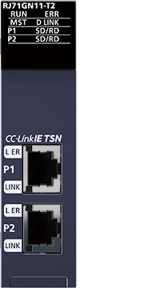

Controllers MELSEC iQ-R Series Product features -Network-

CC-Link IE TSN master/local module
Control communication requiring real-time performance and TCP/IP communication can be mixed, maximizing CC-Link IE TSN performance and functionality.

Deterministic control even when mixed with TCP/IP communication
- Mixed TCP/IP communication
- IIoT system
- Deterministic performance of cyclic communication is maintained even when mixed with slower information data (non real-time)
- TCP/IP communication devices can be used without affecting overall control
Some devices cannot be connected to CC-Link IE TSN depending on the system configuration.

- *1.Class B managed Ethernet switch supporting CC-Link IE TSN recommended by the CC-Link Partner Association
Error cause analysis with highly precise time synchronization
- Time-series analysis
- Synchronized communication
- Highly accurate time synchronization accuracy within ±1 µs and each station connected to the network sharing time-stamp information in 1 ms increments improves system diagnostics and troubleshooting by enabling sequential analysis of stations in the network
- The error history is displayed consecutively based on time-stamp data, enabling accurate analysis of the cause of error using the actual time the event occurred

Reducing overall operating time with high-speed link scan
- Min. communication cycle 31.25 µs*2
- High-speed processing 16 x*3 faster
- Link points 2 x*4
- The advanced protocol built into CC-Link IE TSN is complemented by the time-sharing method functionality that enables simultaneous communications between network stations
- Fast communication cycle time of just 31.25 µs*2 and high-speed processing approximately 16 times faster than current network performance are achieved, resulting in high-speed and high-accuracy motion control
- Productivity is simultaneously improved owing to a substantial increase in control performance, which reduces overall operating time and enables high-speed and large capacity data communication

- *2.This value is achieved when fast operation mode of the motion module (RD78GH) is used. For details, please refer to the “MELSEC iQ-R Motion Module User’s Manual (Application) (IB-0300411ENG)”.
- *3.Comparison with CC-Link IE Field Network Motion
- *4.Comparison with CC-Link IE Field Network
CC-Link IE TSN master/local module specifications
| Item | RJ71GN11-T2*5 |
|---|---|
| Compatible network | CC-Link IE TSN |
| Communication speed (bps) | 1G/100M |
| Maximum stations per network*6 | 121 |
| Network topology*7 | Line, star*8, ring |
| Connection cable | Ethernet cable (Category 5e or higher) |
| Max. station-to-station distance (m) | 100 |
| Overall cable distance (m) | Line: 12000 Ring: 12100 Others: depends on the system configuration |
| Maximum link points per network | |
| Remote input (RX), remote output (RY) | 16384 points, 2KB |
| Remote register (RWr, RWw) | 8192 points, 16KB |
| Link relay (LB) | 32768 points, 4 KB For extended points:131072 points, 16 KB |
| Link register (LW) | 16384 points, 32 KB For extended points:524288 points, 1024 KB |
- *5.For restrictions on the system configuration, please refer to the “MELSEC iQ-R CC-Link IE TSN User's Manual (Startup) (SH-082127ENG)”.
- *6.Includes a master station.
- *7.Please use a managed Ethernet switch supporting CC-Link IE TSN (class B) recommended by the CC-Link Partner Association for the CC-Link IE TSN master/local module (RJ71GN11-T2) and CC-Link IE TSN Plus master/local module (RJ71GN11-EIP).
- *8.Line topology and star topology can be mixed.
CC-Link IE TSN Plus master/local module

Utilize other network devices
- Utilize EtherNet/IP™ devices
- Utilize EtherNet/IP™ devices while maintaining high-speed/high-accuracy CC-Link IE TSN communication
- Both networks are easily settable within the engineering software GX Works3
- Socket communication is supported, allowing devices that do not support SLMP via general Ethernet to be connected

CC-Link IE TSN Plus master/local module specifications
| Item | RJ71GN11-EIP | |
|---|---|---|
| Compatible network | CC-Link IE TSN EtherNet/IP™ |
|
| Communication speed (bps) | 1G/100M | |
| Maximum stations per network*9 | 121 | |
| Network topology*10 | Line*11, star*12 | |
| Connection cable | Ethernet cable (Category 5e or higher) | |
| Max. station-to-station distance (m) | 100 | |
| Overall cable distance (m) | Line: 12000 Others: depends on the system configuration |
|
| Maximum link points per network | ||
| Remote input (RX), remote output (RY) | 16384 points, 2KB | |
| Remote register (RWr, RWw) | 8192 points, 16KB | |
| Link relay (LB) | 32768 points, 4 KB For extended points:131072 points, 16 KB |
|
| Link register (LW) | 16384 points, 32 KB For extended points:524288 points, 1024 KB |
|
| EtherNet/IP™ communications | ||
| Data transmission speed (bps) | 1G/100M | |
| Class 1communications | Number of connections |
|
| Communication data size (byte) | 1444 (per connection)*14 | |
| RPI (communication cycle) (ms) | 0.5…60000 (in increments of 0.5 ms) | |
| PPS (communication processing performance)*15 (pps) | 12000 | |
| UCMM communications | Number of connections (number of simultaneous executions) |
|
| Communication data size (byte) |
|
|
| Class 3 communications | Number of connections |
|
| Communication data size (byte) |
|
|
- *9.Includes a master station.
- *10.Please use a managed Ethernet switch supporting CC-Link IE TSN (class B) recommended by the CC-Link Partner Association for the CC-Link IE TSN master/local module (RJ71GN11-T2) and CC-Link IE TSN Plus master/local module (RJ71GN11-EIP).
- *11.The CC-Link IE TSN Plus master/local module (RJ71GN11-EIP) can only be connected at the end of the network.
- *12.Line topology and star topology can be mixed.
- *13.The total number of connections for Class 1 communications, UCMM tag communications (server function), and Class 3 communications is 256. Therefore, the number of each connection varies depending on the number and size of separate communications.
- *14.If the external device does not support Large Forward Open (CIP option specifications), the communication data size is up to 504 bytes.
- *15.PPS: Number of frames that can be processed per second
- *16.The maximum number of simultaneous executions (the number of connections that can be received simultaneously) for the server function is 96 for the total of UCMM and Class 3 communications server functions.
CC-Link IE TSN block-type remote modules
Click here for details on CC-Link IE TSN block-type remote modules